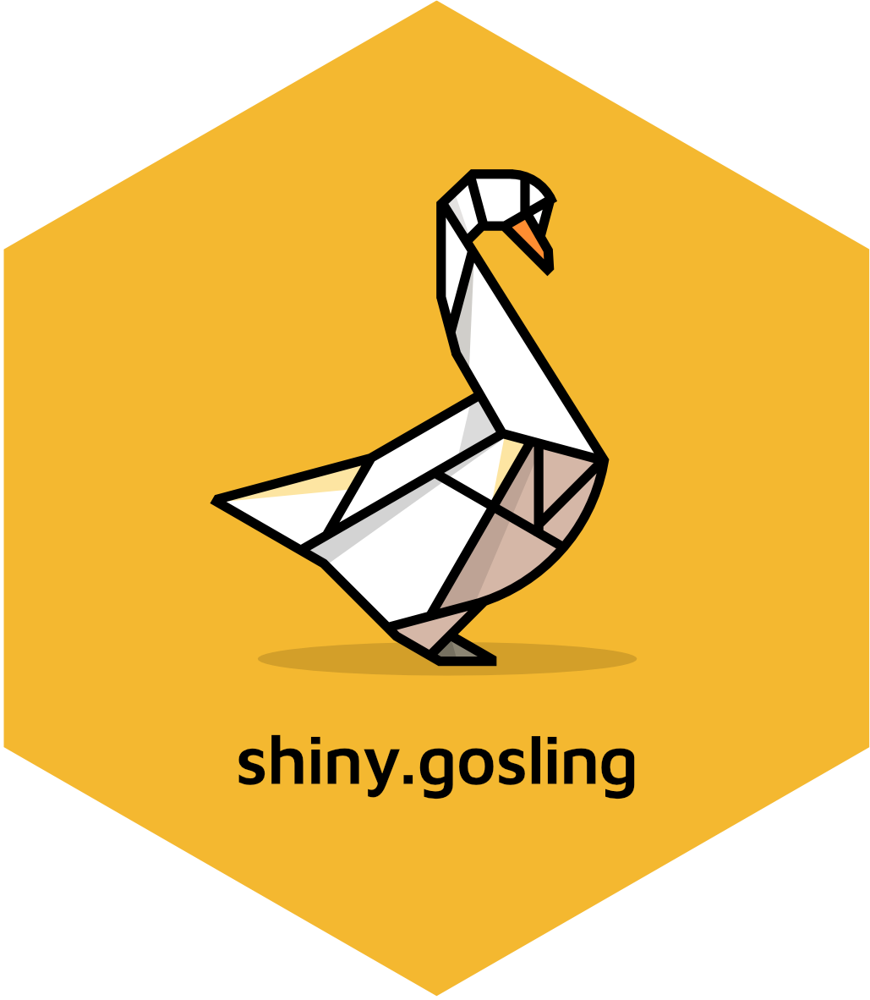

2. Using a GRanges object in shiny.gosling
GRanges.RmdCall required libraries.
require(shiny.gosling)
require(shiny)
require(GenomicRanges)Getting a sample data for the GRanges object
We will be loading the peaks data from ChipSeq dataset with the GEO accession GSM1295076
GSM1295076_CBX6_BF_ChipSeq_mergedReps_peaks.bed.gz file
will be used to create a sample GRanges object.
url <- "https://rb.gy/7y3fx"
temp_file <- file.path(tempdir(), "data.gz")
download.file(url, destfile = temp_file, method = "auto", mode = "wb")
df <- read.delim(
temp_file,
header = FALSE,
comment.char = "#",
sep = ""
)
gr <- GRanges(
seqnames = df$V1,
ranges = IRanges(df$V2, df$V3)
)
grUsing the GRanges object for a plot using shiny.gosling
Method 1 - Using the track_data_gr function
You can use the track_data_gr to pass the
GRanges object inside a track.
Note: Make sure to run the Shiny app using the
shiny::runApp() rather than interactively running the
shiny::shinyApp() object.
ui <- fluidPage(
use_gosling(clear_files = FALSE),
goslingOutput("gosling_plot")
)
track_1 <- add_single_track(
width = 800,
height = 180,
data = track_data_gr(
gr, chromosomeField = "seqnames",
genomicFields = c("start", "end")
),
mark = "bar",
x = visual_channel_x(
field = "start", type = "genomic", axis = "bottom"
),
xe = visual_channel_x(field = "end", type = "genomic"),
y = visual_channel_y(
field = "width", type = "quantitative", axis = "right"
),
size = list(value = 5)
)
composed_view <- compose_view(
layout = "linear",
tracks = track_1
)
arranged_view <- arrange_views(
title = "Basic Marks: bar",
subtitle = "Tutorial Examples",
views = composed_view
)
server <- function(input, output, session) {
output$gosling_plot <- renderGosling({
gosling(
component_id = "component_1",
arranged_view
)
})
}
shiny::shinyApp(ui, server)Method 2 - Using the track_data_csv function
You can save the GRanges object as a csv
file inside the www directory which can be used in the shiny.gosling
plot.
if (!dir.exists("data")) {
dir.create("data")
}
utils::write.csv(gr, "data/ChipSeqPeaks.csv", row.names = FALSE)
track_1 <- add_single_track(
width = 800,
height = 180,
data = track_data_csv(
"data/ChipSeqPeaks.csv", chromosomeField = "seqnames",
genomicFields = c("start", "end")
),
mark = "bar",
x = visual_channel_x(
field = "start", type = "genomic", axis = "bottom"
),
xe = visual_channel_x(field = "end", type = "genomic"),
y = visual_channel_y(
field = "width", type = "quantitative", axis = "right"
),
size = list(value = 5)
)
composed_view <- compose_view(
layout = "linear",
tracks = track_1
)
arranged_view <- arrange_views(
title = "Basic Marks: bar",
subtitle = "Tutorial Examples",
views = composed_view
)
shiny::shinyApp(ui = fluidPage(
use_gosling(clear_files = FALSE),
goslingOutput("gosling_plot")
), server = function(input, output, session) {
output$gosling_plot <- renderGosling({
gosling(
component_id = "component_1",
arranged_view
)
})
}, options = list(height = 1000))Session Info
## R version 4.3.1 (2023-06-16)
## Platform: x86_64-pc-linux-gnu (64-bit)
## Running under: Ubuntu 22.04.3 LTS
##
## Matrix products: default
## BLAS: /usr/lib/x86_64-linux-gnu/openblas-pthread/libblas.so.3
## LAPACK: /usr/lib/x86_64-linux-gnu/openblas-pthread/libopenblasp-r0.3.20.so; LAPACK version 3.10.0
##
## locale:
## [1] LC_CTYPE=C.UTF-8 LC_NUMERIC=C LC_TIME=C.UTF-8
## [4] LC_COLLATE=C.UTF-8 LC_MONETARY=C.UTF-8 LC_MESSAGES=C.UTF-8
## [7] LC_PAPER=C.UTF-8 LC_NAME=C LC_ADDRESS=C
## [10] LC_TELEPHONE=C LC_MEASUREMENT=C.UTF-8 LC_IDENTIFICATION=C
##
## time zone: UTC
## tzcode source: system (glibc)
##
## attached base packages:
## [1] stats graphics grDevices utils datasets methods base
##
## loaded via a namespace (and not attached):
## [1] vctrs_0.6.3 cli_3.6.1 knitr_1.44 rlang_1.1.1
## [5] xfun_0.40 stringi_1.7.12 purrr_1.0.2 promises_1.2.1
## [9] textshaping_0.3.6 shiny_1.7.5 xtable_1.8-4 jsonlite_1.8.7
## [13] glue_1.6.2 rprojroot_2.0.3 htmltools_0.5.6 httpuv_1.6.11
## [17] ragg_1.2.5 sass_0.4.7 rmarkdown_2.25 evaluate_0.21
## [21] jquerylib_0.1.4 ellipsis_0.3.2 fastmap_1.1.1 yaml_2.3.7
## [25] lifecycle_1.0.3 memoise_2.0.1 stringr_1.5.0 compiler_4.3.1
## [29] fs_1.6.3 Rcpp_1.0.11 later_1.3.1 systemfonts_1.0.4
## [33] digest_0.6.33 R6_2.5.1 magrittr_2.0.3 bslib_0.5.1
## [37] tools_4.3.1 mime_0.12 pkgdown_2.0.7 cachem_1.0.8
## [41] desc_1.4.2